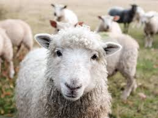
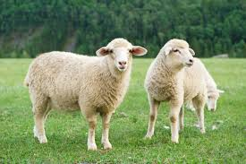

Ovelha
Ovis aries — família Bovidae
80
kg
12
anos
Ovelhas são criadas por sua lã, carne e leite, adaptadas a diferentes climas e terrenos.
Lã com propriedades térmicas e de absorção únicas.
Vivem em bandos e demonstram comportamento gregário, seguindo líderes experientes.
A tosa regular é importante para evitar superaquecimento e infestações.
“Entre colinas e vales, o balido das ovelhas é música pastoral.”
- Surgiu: ~11.000 anos (domesticação)
- Tipo: Mamífero
- Idade Média: 10–12 anos
- Macho adulto (carneiro): 100 kg
- Fêmea adulta: 70–80 kg
- Família: Bovidae
Ruminantes de menor porte, eficientes em ambientes com pasto ralo.
Seleção artificial gerou raças especializadas em lã fina, carne ou leite.